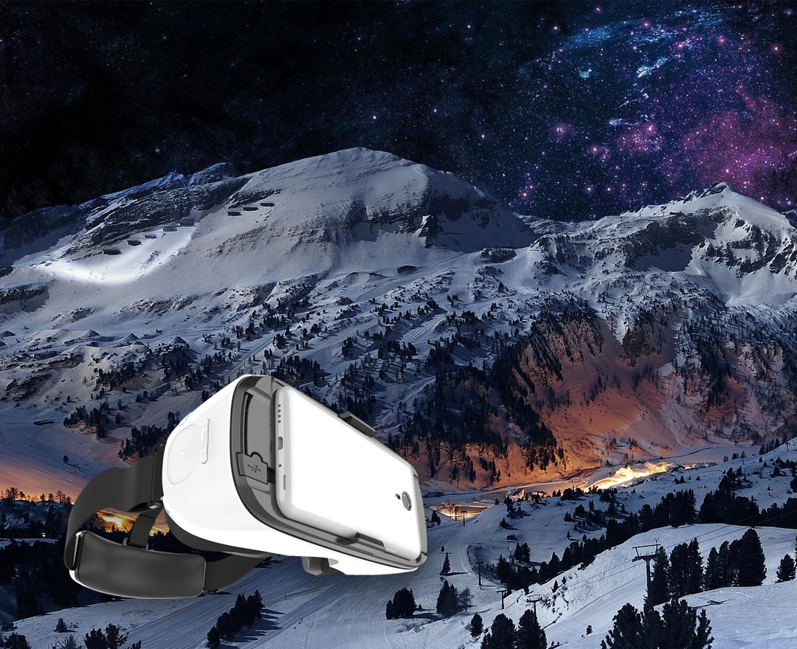

关于我们
- 
- 唯见科技是一家专注于虚拟现实（Virtual Reality）技术的硬件生产，软件开发和内容分享平台运营的综合性公司。
- 公司嫁接美国硅谷的国际领先技术，嫁接全球VR现有的生态资源，从硬件，应用软件开发和平台"三管齐下"，打造"先发优势"，努力建立中国乃至全球首个"VR生态圈"。使虚拟现实技术真正实现在媒体，娱乐，科技教育和旅游等领域的应用。
- 唯见科技由三位硅谷创始人于2014年底在湾区创立。
- 设立研发中心，在美国申请多项专利，制定了唯见科技在虚拟现实的发展方向和"三足并进"的策略。当年12月决定在中国成立行政与技术中心，并把中国定位为"首发市场"。
- 唯见科技应金华市长的邀请
- 将其行政、生产制造中心落在金华开区网络经济中心，拥有1000多平米的开阔办公区，并在金华开发区拥有近2000平米的制造生产车间。
- 唯见科技于2015年4月将技术研发中心落户在杭州。
- 包括硬件研发，应用软件开发，SDK开发，平台构建和运维等，并将VR内容制作中心落户在了杭州下沙。